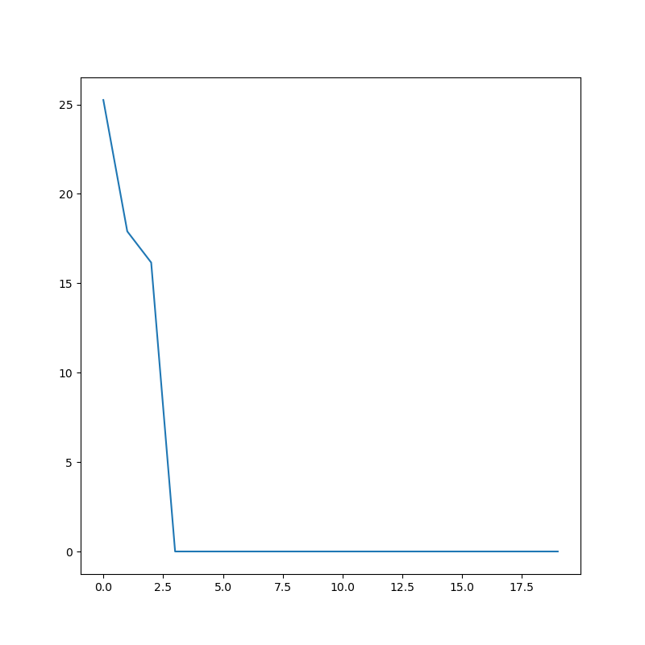

Note
Click here to download the full example code
Simple Example¶
A simple example using PyDSD. This example reads in a OTT APU Disdrometer file, calculates the radar variables, and plots a few of them. Author: Joseph C. Hardin
import numpy as np
import matplotlib.pyplot as plt
import pydsd as pyd
filename = '../testdata/sgpdisdrometerC1.b1.20110427.000000_test_jwd_b1.cdf'
dsd = pyd.aux_readers.ARM_JWD_Reader.read_arm_jwd_b1(filename)
#Read in the Parsivel File
fig = plt.figure(figsize=(8,8))
plt.plot(dsd.fields['Nd']['data'][0])
plt.show()
Total running time of the script: ( 0 minutes 0.283 seconds)